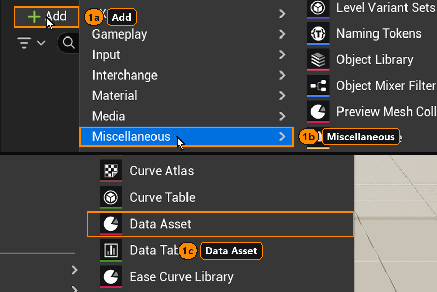
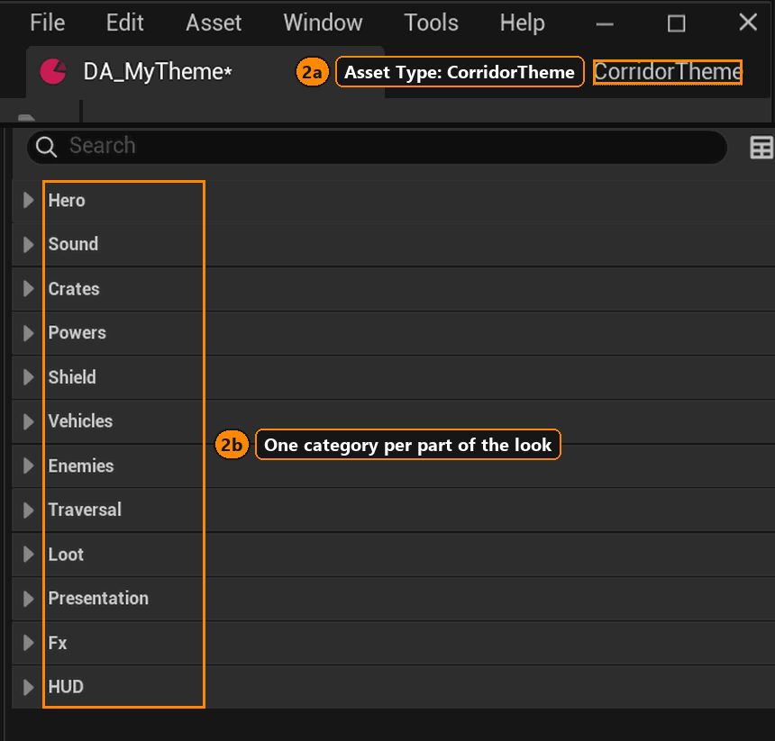
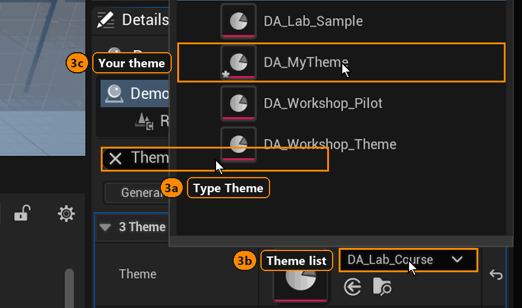
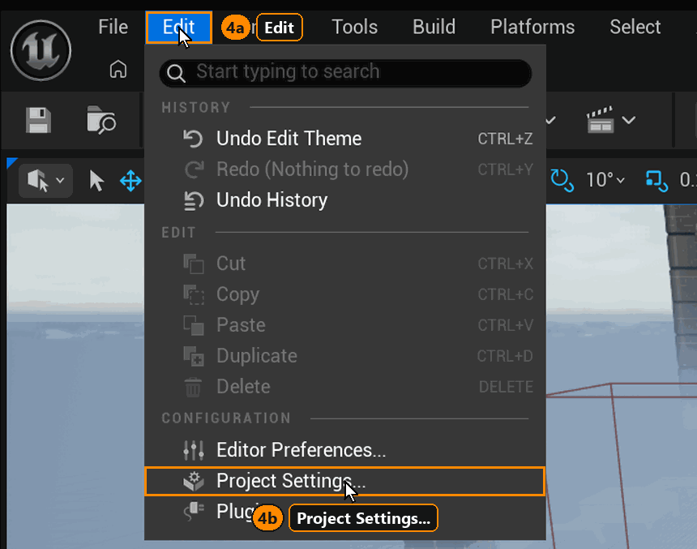
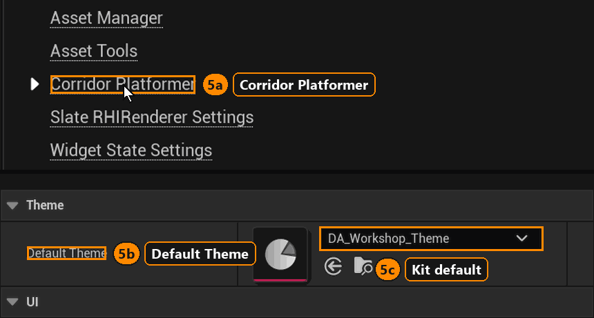
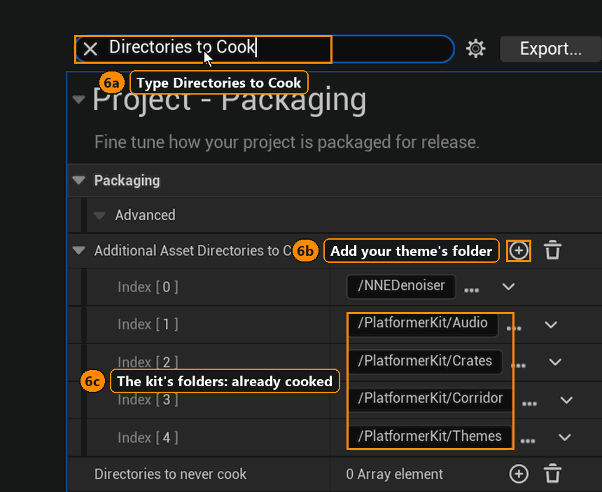
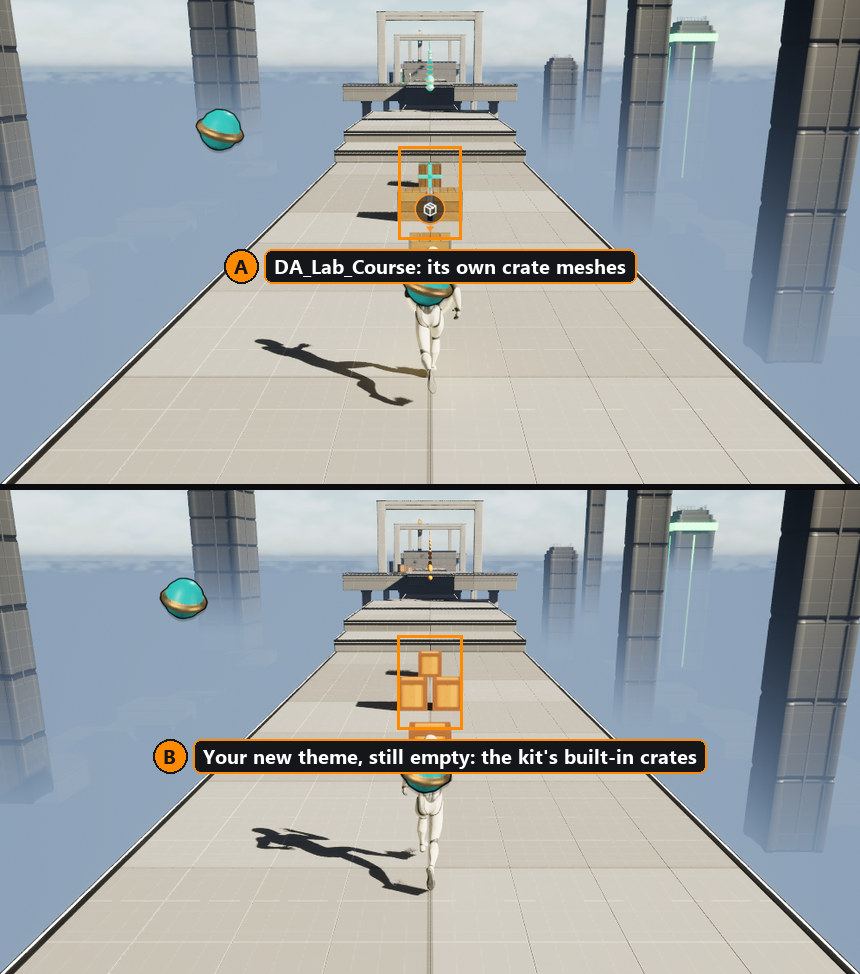

12. Themes
Goal: give a level, or the whole project, its own look and sound through one asset: the hero's mesh and clips, crates, pickups, power-ups, enemy looks, level props, effects, HUD icons and music. No map is edited.
You need: Unreal Engine 5.3–5.8 with the plugin enabled (pictures: 5.7), Settings > Plugin Content ticked in the Content Browser (5.3–5.5: Show Plugin Content), and the demo map Course1_RunAndJump open. Stop Play before you edit a theme.
A theme is a data asset of the class CorridorTheme. The kit ships four in Plugins > Proving Grounds: 3D Platformer Mechanics > Themes: DA_Lab_Course (the demo courses use it), DA_Lab_Sample, DA_Workshop_Pilot and DA_Workshop_Theme. DA_PlatformerUI in the same folder is a UI style, not a theme.
Part 1: make a theme
- In the Content Browser open your own folder (here Content > MyTheme) and click Add > Miscellaneous > Data Asset.

In the class picker (Pick Class For Data Asset Instance) type Corridor in the search box, select Corridor Theme and click Select. Name the asset (here DA_MyTheme). To start from a complete look instead, right-click a shipped theme and choose Duplicate, as in topics 6 and 11.
- Double-click the new theme to open it: the window shows Asset Type: CorridorTheme. Its Details panel has one category per part of the look; click a category header to fold or unfold it.

- Hero: Anim Set, the hero's mesh and clips (topic 6).
- Sound: the Sounds map (event name to clips), Music and Music Volume (topic 14).
- Crates, Powers, Shield, Vehicles, Loot: the meshes of crates, power-ups, the shield, the jetboard and pickups.
- Enemies: Enemy Looks (topic 11). Traversal: level props and rail obstacles.
- Fx: effects by event name. HUD: the HUD icons and digits. Presentation: the pickup guide.
A slot you leave empty keeps the kit's own look, so a new theme starts as the kit's built-in look. Sounds work the other way: while a theme is active, only the events its Sounds map lists play, so a new, empty theme is silent until you map them.
Part 2: use it
- For one level: select the level's BP_Control in the Outliner (the demo maps call it Demo_Control; topic 3 shows how to find it), type Theme in its Details search box, open the list under 3 Theme > Theme and pick your theme.

- For the whole project, open Edit > Project Settings....

- Click Game > Corridor Platformer. Default Theme is the theme of every level whose BP_Control Theme is empty; the kit sets it to DA_Workshop_Theme. Pick yours there to change it (it is saved in your project's DefaultGame.ini).

- Make sure a packaged game gets your theme: it is loaded by name while the game runs, so nothing else pulls it into the build. Type Directories to Cook in the Project Settings search box and, under Additional Asset Directories to Cook, click + and choose your theme's folder (here /Game/MyTheme). The kit's own folders, Themes among them, are already in the list.

Result
Click Play. The same spot 1.3 s into the run, first with DA_Lab_Course, then with the new theme on Demo_Control: the Lab theme gives the crates its crate model (SM_CrateK1_Basic); the new theme's Crates slots are empty, so the same crates fall back to the kit's built-in box (Cube with the crate texture).

Fill the slots you want in your theme and play again: every level that uses it changes, and the maps stay as they are.
If it doesn't work - Nothing changes: restart Play (a theme is read when Play starts). A level's BP_Control Theme wins over the project Default Theme, and a
-Theme=command-line option wins over both. - The hero keeps its old look: your BP_Character child has its own Anim Set (Corridor > Animation); it wins over the theme's. Leave it empty. - Your theme is silent: map the events in Sound > Sounds (see SOUND.md). - The packaged game shows the built-in look or plays no sound: your theme's folder is missing from Additional Asset Directories to Cook.
See also: README section 9, Theme system · Quickstart